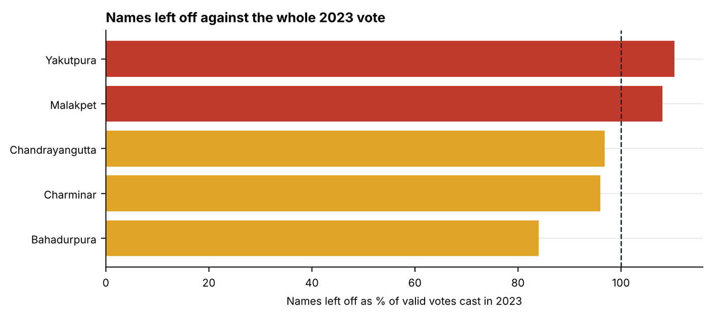
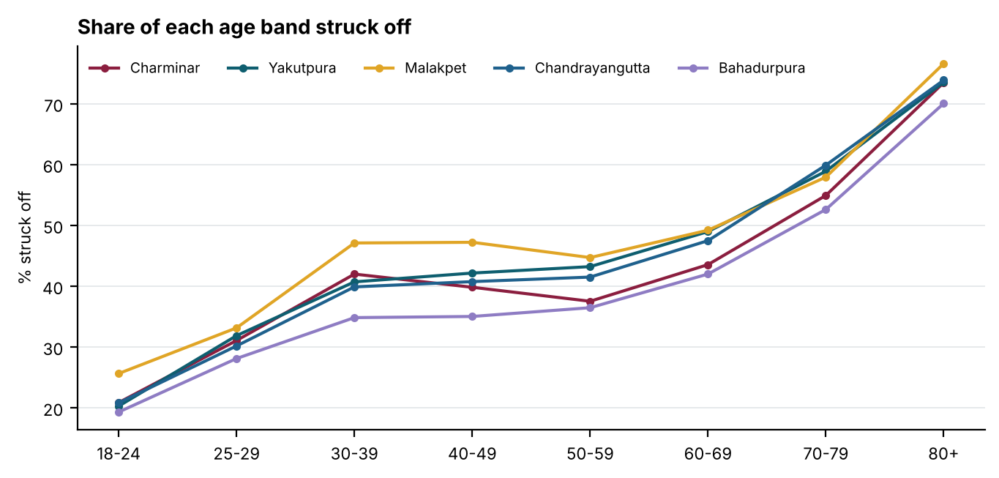
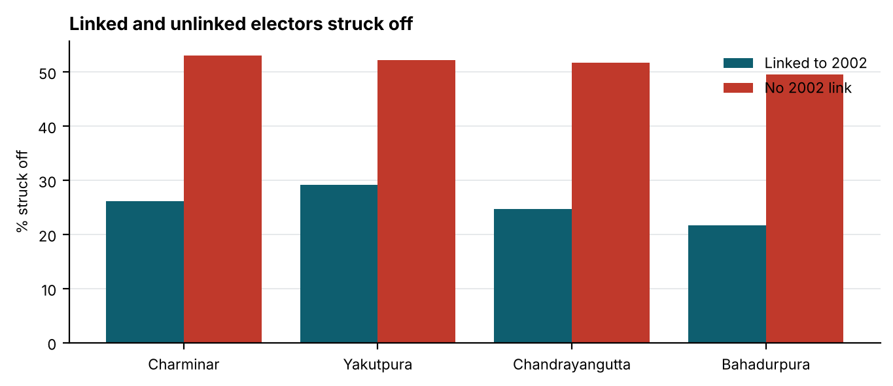

Special Intensive Revision 2026
Hyderabad Old City: four in ten struck off
Charminar, Yakutpura, Malakpet, Chandrayangutta and Bahadurpura, polling part by polling part
- 6,62,063
- electors struck off the five pre-revision rolls
- 40.0%
- of all electors on those rolls
- 5 of 5
- constituencies where more names were struck off than the 2023 margin
- 3,69,972
- kept on the roll but summoned to a hearing
Varna Sri Raman · 30 September 2026
Part I: The five constituencies
At a glance
The Special Intensive Revision reached Hyderabad in 2026. On the pre-revision rolls of five Old City constituencies stood 16,57,207 electors. The September lists struck 6,62,063 of them off, 40.0%, and kept 3,69,972 more on the draft roll only on condition that they attend a hearing. Unlike the Bihar lists, which hold only the removed, these lists hold every elector, so each group has a true rate: the share of that group struck off.
Every one of the five lost more names than its 2023 winning margin. In Yakutpura and Malakpet the names struck off exceed every valid vote cast in 2023. Yakutpura was won by 878 votes and lost 1,54,982 names. The heaviest burden fell on the oldest electors and on those who could not be traced to the 2002 roll: 74.0% of electors aged 80 and over were struck off, and electors with no 2002 link were struck off at twice the rate of those with one.
Deletions and coverage
| Constituency | Electors | Struck off | % struck off | Summoned | % summoned | Parts |
|---|---|---|---|---|---|---|
| Charminar | 2,37,483 | 94,174 | 39.7% | 50,168 | 21.1% | 198 |
| Yakutpura | 3,74,948 | 1,54,982 | 41.3% | 87,367 | 23.3% | 332 |
| Malakpet | 3,16,454 | 1,42,688 | 45.1% | 68,188 | 21.6% | 60 |
| Chandrayangutta | 3,77,299 | 1,48,869 | 39.5% | 80,246 | 21.3% | 305 |
| Bahadurpura | 3,51,023 | 1,21,350 | 34.6% | 84,003 | 23.9% | 263 |
| All five | 16,57,207 | 6,62,063 | 40.0% | 3,69,972 | 22.3% | 1,158 |
Malakpet's list is read by polling-station name, which gives 60 stations rather than parts, and it is incomplete: it holds 1,42,688 names struck off against the 1,47,799 in an independent count of the published Malakpet list. For the other four constituencies the two counts agree exactly.
Deletions against the margin and the votes polled
Each constituency's names struck off are set against two yardsticks from the 2023 Assembly election: the margin by which the seat was won, and the valid votes cast. The comparison is not a claim that these electors would have voted, or how. It measures how large the revision is beside the electorate that decided the seat.
| Constituency | Won by (2023) | Margin | Struck off | Struck off − margin | × margin | Valid votes 2023 | % of valid votes |
|---|---|---|---|---|---|---|---|
| Yakutpura | Jaffer Hussain | 878 | 1,54,982 | +1,54,104 | 176.5× | 1,40,434 | 110.4% |
| Malakpet | Ahmed Bin Abdullah Balala | 26,106 | 1,42,688 | +1,16,582 | 5.5× | 1,32,020 | 108.1% |
| Chandrayangutta | Akbaruddin Owaisi | 81,660 | 1,48,869 | +67,209 | 1.8× | 1,53,760 | 96.8% |
| Charminar | Mir Zulfeqar Ali | 22,853 | 94,174 | +71,321 | 4.1× | 98,103 | 96.0% |
| Bahadurpura | Mohammed Mubeen | 67,025 | 1,21,350 | +54,325 | 1.8× | 1,44,404 | 84.0% |

Across the five constituencies the names struck off equal 99.0% of the valid votes cast in 2023. In every constituency more names were struck off than the winning candidate received.
The reasons recorded
The list of the absent, shifted and dead carries the reason an officer entered against each name. 64.2% of removals were entered as "permanently shifted", 20.8% as "untraceable or absent", 8.7% as dead and 6.0% as enrolled elsewhere. Each is an officer's entry after a visit or its absence, not a finding.
| Constituency | Shifted | Untraceable or absent | Dead | Enrolled elsewhere |
|---|---|---|---|---|
| Charminar | 44.9% | 38.3% | 10.9% | 6.0% |
| Yakutpura | 66.8% | 16.1% | 9.4% | 7.7% |
| Malakpet | 81.4% | 6.5% | 7.2% | 4.9% |
| Chandrayangutta | 61.4% | 25.4% | 8.6% | 4.2% |
| Bahadurpura | 59.2% | 24.4% | 8.0% | 7.6% |
The untraceable share runs from 6.5% in Malakpet to 38.3% in Charminar. Those entries record only that an officer did not find someone.
Age

The older the elector, the likelier the removal, in every constituency: between 70.1% and 76.6% of electors aged 80 and over were struck off, against 19.3% to 25.6% of those aged 18 to 24. Death accounts for part of the top of the range; 57,526 deaths were recorded. But the rate roughly doubles between 18 to 24 and 30 to 39, ages at which almost nobody dies, so death is not the whole of it.
Women and men
Women and men were struck off at similar rates: 39.9% of women and 40.5% of men. Inside the same polling part the gap runs from -2.2 to 2.4 points and changes sign between constituencies. In Bihar women were 55.5% of the removed and over-represented in every district; the Old City shows no such pattern.
Religion
The roll records no religion; it is estimated from each elector's name, and a second, independent classification agrees on 99% of names. Across the five constituencies 52.0% of Hindu-name electors were struck off and 35.3% of Muslim-name electors. Inside the same polling part, where the booth officer, the street and the housing are the same for everyone, Hindu-name electors were struck off 9.6 to 24.5 points more often, in 728 of 823 parts large enough to compare. The lists give religion and age separately, not together, so part of this gap may be an age gap.
| Constituency | Muslim names, % of roll | Hindu names struck off | Muslim names struck off | Gap inside parts (points) |
|---|---|---|---|---|
| Charminar | 69.3% | 46.6% | 36.1% | +9.6 |
| Yakutpura | 68.4% | 55.8% | 34.5% | +24.5 |
| Malakpet | 55.8% | 53.6% | 38.2% | +16.4 |
| Chandrayangutta | 78.8% | 51.7% | 36.1% | +20.2 |
| Bahadurpura | 89.2% | 44.2% | 33.4% | +12.4 |
The 2002 roll
The revision asks each elector to show a link to the 2002 intensive revision, through their own name or a parent's. Where the lists record it, 51.6% of electors with no link were struck off against 25.3% of those with one. Inside the same polling part unlinked electors were struck off 21 to 28 points more often, in 1,024 of 1,098 parts. Anyone who moved to the city after 2002, or whose family name is spelt differently on the old roll, starts at a disadvantage. Malakpet's list carries no linkage.

Hearings
3,69,972 electors kept on the draft roll were summoned to a hearing, 22.3% of the pre-revision rolls, across 7,164 hearing slots. Not being traceable to the last intensive revision was the commonest reason, 31.6% of flags. The heaviest single slot listed 459 cases, in Charminar, where the median slot listed 38. The lists do not record how long a slot lasted.
| Rule that sent the elector to a hearing | Charminar | Yakutpura | Malakpet | Chandrayangutta | Bahadurpura | All five |
|---|---|---|---|---|---|---|
| Unmapped with Last SIR | 12,465 | 28,848 | 32,323 | 20,749 | 14,104 | 1,08,489 |
| Parent Name Mismatch | 10,430 | 13,018 | 10,032 | 14,474 | 15,226 | 63,180 |
| Self Name Mismatch | 7,602 | 8,780 | 7,730 | 9,358 | 9,463 | 42,933 |
| Progeny >= 6 | 5,281 | 11,192 | 5,067 | 12,666 | 17,616 | 51,822 |
| Parent Age Difference <15 | 5,850 | 9,222 | 4,870 | 8,301 | 10,034 | 38,277 |
| Progeny Age Gap <9 Month | 3,050 | 4,970 | 2,778 | 5,394 | 6,591 | 22,783 |
| Grandparent Age difference <40 | 1,945 | 3,662 | 1,899 | 4,032 | 4,758 | 16,296 |
Polling parts
Part removal rates run from 13% to 80%, and 30 parts lost more than 60% of their roll: 5 in Charminar and 25 in Yakutpura. Across parts, the Muslim-name share of the roll and the removal rate move in opposite directions in every constituency.
| Constituency | Part | Locality | Electors | Struck off | % struck off | Muslim names % | Untraceable % of removals |
|---|---|---|---|---|---|---|---|
| Charminar | 22 | Dood Bowli | 942 | 756 | 80.2% | 97 | 8 |
| Yakutpura | 297 | Banu Nagar Colony | 1,381 | 1,069 | 77.4% | 16 | 1 |
| Charminar | 136 | Kalikaman | 731 | 530 | 72.5% | 54 | 7 |
| Yakutpura | 302 | Singareni Colony | 1,338 | 945 | 70.6% | 21 | 0 |
| Yakutpura | 299 | Adrash Nagar | 1,097 | 755 | 68.8% | 5 | 5 |
| Yakutpura | 305 | Singareni Colony Huts | 1,198 | 822 | 68.6% | 20 | 0 |
| Yakutpura | 283 | Nagarjuna Colony | 1,521 | 1,026 | 67.5% | 4 | 12 |
| Yakutpura | 321 | Vinay Nagar Colony | 634 | 421 | 66.4% | 2 | 3 |
| Yakutpura | 286 | Champapet Road | 1,060 | 695 | 65.6% | 2 | 19 |
| Yakutpura | 301 | Adrash Nagar | 1,209 | 788 | 65.2% | 8 | 11 |
| Yakutpura | 285 | Champapet Road | 674 | 438 | 65.0% | 6 | 4 |
| Yakutpura | 327 | – | 827 | 535 | 64.7% | 18 | 0 |
| Charminar | 134 | Kalikaman | 873 | 563 | 64.5% | 40 | 2 |
| Yakutpura | 312 | Adrash Nagar | 1,025 | 661 | 64.5% | 39 | 1 |
| Yakutpura | 303 | Singareni Colony | 1,404 | 902 | 64.2% | 22 | 9 |
Key insights
- 6,62,063 electors struck off, 40.0% of the five pre-revision rolls, and 3,69,972 more summoned to a hearing.
- More names struck off than the 2023 margin in all 5 constituencies; more than every valid vote cast in Yakutpura and Malakpet.
- Yakutpura was won by 878 votes and lost 1,54,982 names, 176 times the margin.
- 74.0% of electors aged 80 and over struck off, against 20.9% of those aged 18 to 24.
- No link to the 2002 roll roughly doubled the chance of being struck off: 51.6% against 25.3%.
- 20.8% of removals entered as "untraceable or absent", ranging from 6.5% to 38.3% between constituencies.
- 459 cases listed for a single hearing slot in Charminar.
- 30 polling parts lost more than 60% of their roll.
What this shows and what it does not
The lists show how many electors were struck off, from which parts, and who they were by age, sex, religion estimated from name, and 2002 linkage. They do not show whether any individual removal was right. The reason code records the officer's entry, not the truth of it: a household that moved out of the Old City is a correct "shifted" deletion, and the files cannot tell it from an elector who was at home and missed. Religion and age are aggregated separately, so a religion gap may partly be an age gap. The Malakpet list used here is incomplete. These are the September lists; the Commission extended the calendar on 7 September, with hearings to 5 November and the final roll on 9 November, so restorations after hearings are not in these counts.
Part II: Constituency chapters
Charminar
Charminar had 2,37,483 electors on its pre-revision roll, in 198 polling parts. The lists struck 94,174 of them off, 39.7%, and summoned 50,168 more to a hearing, 21.1%. In 2023 Mir Zulfeqar Ali won the seat with 49,103 votes, by a margin of 22,853; the names struck off are 4.1 times that margin and 96.0% of the valid votes cast.
Officers entered 44.9% of the removals as "permanently shifted" and 38.3% as "untraceable or absent". 73.5% of electors aged 80 and over were struck off, against 20.9% of those aged 18 to 24. Women were struck off at 38.1% and men at 41.1%. Hindu-name electors were struck off at 46.6% and Muslim-name electors at 36.1%; inside the same part the gap is +9.6 points.
Electors linked to the 2002 roll were struck off at 26.2%, those with no link at 53.1%; inside the same part the gap is +26.0 points, in 195 of 198 parts.
Hearings: 639 slots, a median of 38 cases per slot and 459 in the heaviest. The part with the highest removal rate is 22 (Dood Bowli), at 80.2%.
| Age band | 18-24 | 25-29 | 30-39 | 40-49 | 50-59 | 60-69 | 70-79 | 80+ |
|---|---|---|---|---|---|---|---|---|
| % struck off | 20.9 | 31.1 | 42.0 | 39.8 | 37.5 | 43.6 | 54.9 | 73.5 |
Yakutpura
Yakutpura had 3,74,948 electors on its pre-revision roll, in 332 polling parts. The lists struck 1,54,982 of them off, 41.3%, and summoned 87,367 more to a hearing, 23.3%. In 2023 Jaffer Hussain won the seat with 46,153 votes, by a margin of 878; the names struck off are 176.5 times that margin and 110.4% of the valid votes cast.
Officers entered 66.8% of the removals as "permanently shifted" and 16.1% as "untraceable or absent". 73.5% of electors aged 80 and over were struck off, against 20.3% of those aged 18 to 24. Women were struck off at 40.3% and men at 42.4%. Hindu-name electors were struck off at 55.8% and Muslim-name electors at 34.5%; inside the same part the gap is +24.5 points.
Electors linked to the 2002 roll were struck off at 29.2%, those with no link at 52.2%; inside the same part the gap is +21.0 points, in 280 of 332 parts.
Hearings: 1,276 slots, a median of 60 cases per slot and 323 in the heaviest. The part with the highest removal rate is 297 (Banu Nagar Colony), at 77.4%.
| Age band | 18-24 | 25-29 | 30-39 | 40-49 | 50-59 | 60-69 | 70-79 | 80+ |
|---|---|---|---|---|---|---|---|---|
| % struck off | 20.3 | 31.9 | 40.7 | 42.2 | 43.2 | 49.0 | 58.9 | 73.5 |
Malakpet
Malakpet had 3,16,454 electors on its pre-revision roll, in 60 polling stations. The lists struck 1,42,688 of them off, 45.1%, and summoned 68,188 more to a hearing, 21.6%. In 2023 Ahmed Bin Abdullah Balala won the seat with 55,805 votes, by a margin of 26,106; the names struck off are 5.5 times that margin and 108.1% of the valid votes cast.
Officers entered 81.4% of the removals as "permanently shifted" and 6.5% as "untraceable or absent". 76.6% of electors aged 80 and over were struck off, against 25.6% of those aged 18 to 24. Women were struck off at 45.1% and men at 47.4%. Hindu-name electors were struck off at 53.6% and Muslim-name electors at 38.2%; inside the same part the gap is +16.4 points.
Malakpet's list carries no 2002 linkage and no part numbers, and 7,891 electors on its roll appear in none of the three outcomes; its figures should not be cited alone until that is resolved.
Hearings: 1,489 slots, a median of 45 cases per slot and 284 in the heaviest. The station with the highest removal rate is (GHMC Community Hall), at 58.9%.
| Age band | 18-24 | 25-29 | 30-39 | 40-49 | 50-59 | 60-69 | 70-79 | 80+ |
|---|---|---|---|---|---|---|---|---|
| % struck off | 25.6 | 33.2 | 47.1 | 47.2 | 44.7 | 49.2 | 58.0 | 76.6 |
Chandrayangutta
Chandrayangutta had 3,77,299 electors on its pre-revision roll, in 305 polling parts. The lists struck 1,48,869 of them off, 39.5%, and summoned 80,246 more to a hearing, 21.3%. In 2023 Akbaruddin Owaisi won the seat with 99,776 votes, by a margin of 81,660; the names struck off are 1.8 times that margin and 96.8% of the valid votes cast.
Officers entered 61.4% of the removals as "permanently shifted" and 25.4% as "untraceable or absent". 73.9% of electors aged 80 and over were struck off, against 20.8% of those aged 18 to 24. Women were struck off at 40.0% and men at 39.0%. Hindu-name electors were struck off at 51.7% and Muslim-name electors at 36.1%; inside the same part the gap is +20.2 points.
Electors linked to the 2002 roll were struck off at 24.8%, those with no link at 51.7%; inside the same part the gap is +27.5 points, in 290 of 305 parts.
Hearings: 1,707 slots, a median of 50 cases per slot and 299 in the heaviest. The part with the highest removal rate is 158 (C Block Main Road, Harmain Masjid), at 57.2%.
| Age band | 18-24 | 25-29 | 30-39 | 40-49 | 50-59 | 60-69 | 70-79 | 80+ |
|---|---|---|---|---|---|---|---|---|
| % struck off | 20.8 | 30.2 | 39.9 | 40.8 | 41.5 | 47.5 | 59.9 | 73.9 |
Bahadurpura
Bahadurpura had 3,51,023 electors on its pre-revision roll, in 263 polling parts. The lists struck 1,21,350 of them off, 34.6%, and summoned 84,003 more to a hearing, 23.9%. In 2023 Mohammed Mubeen won the seat with 89,451 votes, by a margin of 67,025; the names struck off are 1.8 times that margin and 84.0% of the valid votes cast.
Officers entered 59.2% of the removals as "permanently shifted" and 24.4% as "untraceable or absent". 70.1% of electors aged 80 and over were struck off, against 19.3% of those aged 18 to 24. Women were struck off at 35.8% and men at 33.4%. Hindu-name electors were struck off at 44.2% and Muslim-name electors at 33.4%; inside the same part the gap is +12.4 points.
Electors linked to the 2002 roll were struck off at 21.7%, those with no link at 49.6%; inside the same part the gap is +28.2 points, in 259 of 263 parts.
Hearings: 2,053 slots, a median of 50 cases per slot and 150 in the heaviest. The part with the highest removal rate is 208 (Tadban), at 51.6%.
| Age band | 18-24 | 25-29 | 30-39 | 40-49 | 50-59 | 60-69 | 70-79 | 80+ |
|---|---|---|---|---|---|---|---|---|
| % struck off | 19.3 | 28.1 | 34.9 | 35.0 | 36.5 | 42.0 | 52.6 | 70.1 |
Conclusion and what the Election Commission should do
In five constituencies the revision struck off 40.0% of the electors on the rolls, more names than the margin that decided every one of the five seats in 2023, and in two of them more than every valid vote cast. The burden fell on the old, and on those the process could not trace to a roll prepared 24 years earlier. The final roll has not yet been published, and the hearings are still being held.
What the Election Commission should do before the final roll:
- Record and publish the basis for every removal entered as "untraceable or absent", 1,37,825 names: the visits made and the notice given.
- Publish how removals of electors with no link to the 2002 roll were decided, since the link is the revision's own test and the gap it produces is the largest in the files.
- Schedule hearings so that each case can be heard, rather than listing several hundred cases in one slot.
- Explain the removals in the 30 parts that lost more than 60% of their roll.
- Publish restorations after hearings, part by part, so that the final count can be set against these lists.
Method and sources
- Pre-revision rolls, the list of the absent, shifted and dead, and the discrepancy and no-mapping lists: the Chief Electoral Officer, Telangana, for the five constituencies, September 2026, aggregated to the polling part.
- Religion: estimated from each elector's name; a second, independent classification agrees on 99% of names. The roll records none.
- Hearing schedules: the same lists, 28 August to 12 October 2026.
- 2023 Assembly result: Election Commission of India.
Deletion rate: electors on the list of the absent, shifted and dead divided by electors on the pre-revision roll, for the group in question. Within-part difference: the rate of one group minus the other inside each part, pooled across parts with at least 20 of each and weighted by the smaller group. Part counts sum exactly to the constituency totals. No name, EPIC number or address is published.